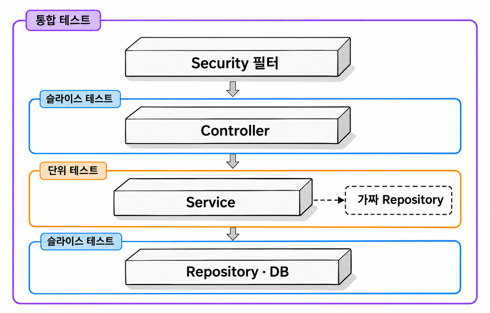
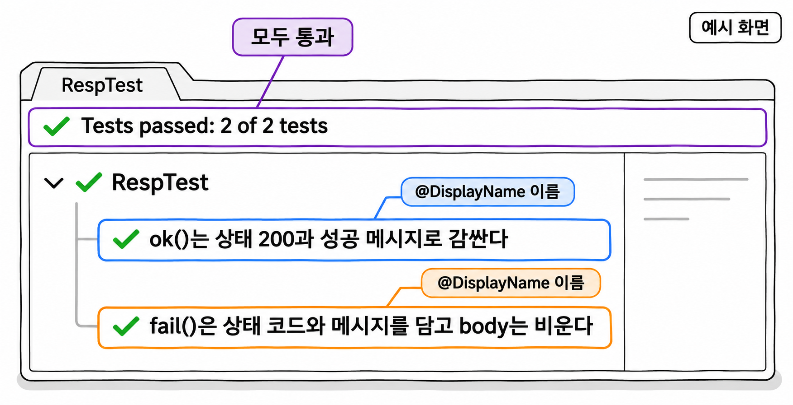
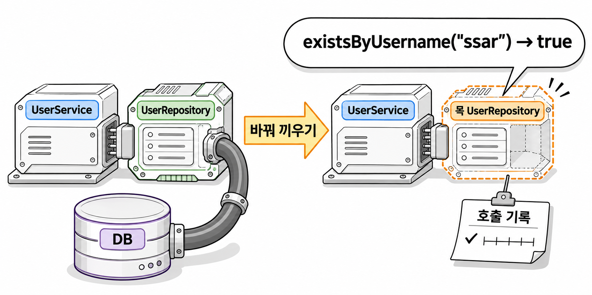

25장. 단위 테스트란?
1. 테스트의 개념
1.1 손으로 하는 테스트의 한계
20장에서는 Postman으로 회원가입부터 로그아웃까지 요청을 하나씩 보내며 블로그 API를 점검했습니다. 처음 만든 API가 제대로 도는지 눈으로 확인할 때는 이 방식이 좋습니다. 하지만 코드를 고칠 때마다 같은 점검을 처음부터 되풀이하기는 어렵습니다.
18장에서 JwtUtil에 roles 클레임을 더한 경우를 떠올려 봅시다. 고친 곳은 한 군데지만 로그인 · 글쓰기 · 관리자 API가 모두 그대로 동작하는지 다시 확인해야 했습니다. 성공 응답에 실패 응답(400 · 401 · 403 · 404)까지 따지면 보내 볼 요청이 수십 개입니다. 사람이 하는 점검에는 다음과 같은 한계가 있습니다.
| 한계 | 블로그 API에서 생기는 일 |
|---|---|
| 시간이 오래 걸린다 | 서버를 띄우고, 로그인해 토큰을 복사하고, 헤더에 붙여 넣는 일을 요청마다 되풀이합니다. |
| 빠뜨리기 쉽다 | 글 수정 코드를 고친 뒤 "남의 글 수정은 403" 같은 실패 경우를 확인하지 않고 넘어갑니다. |
| 결과를 사람이 판단한다 | 응답 JSON의 msg가 바뀌어도 눈으로 훑어보면 놓칩니다. |
| 기록이 남지 않는다 | 무엇을 확인했는지가 코드로 남지 않아 다른 개발자가 같은 점검을 할 수 없습니다. |
테스트 코드(test code)는 손으로 하던 점검을 코드로 적어 둔 것입니다. 기대하는 결과를 코드에 적어 두면 명령 한 번에 수십 개의 점검이 몇 초 안에 끝납니다. 결과가 기대와 다르면 어느 점검이 왜 실패했는지도 바로 알려 줍니다. 기능을 고친 뒤 예전에 되던 기능이 망가지지 않았는지 확인하는 일을 회귀 테스트(regression test)라고 합니다. 테스트 코드가 있으면 회귀 테스트에 드는 비용이 거의 없습니다.
1.2 단위 테스트 · 슬라이스 테스트 · 통합 테스트
테스트는 한 번에 얼마나 많은 코드를 함께 실행하느냐에 따라 나뉩니다.
단위 테스트(unit test)는 클래스 하나나 메서드 하나처럼 작은 단위만 떼어 내 검사합니다. 스프링 컨테이너를 띄우지 않고 new로 객체를 만들어 바로 호출합니다. 검사할 클래스가 다른 객체에 기대고 있으면 그 객체는 가짜로 바꿔 끼웁니다. UserService가 쓰는 UserRepository가 그런 예이고, 가짜 객체는 4절에서 다룹니다.
슬라이스 테스트(slice test)는 애플리케이션을 계층별로 얇게 잘라 한 계층에 필요한 빈만 띄우는 테스트입니다. 스프링 부트가 이 방식을 제공합니다. @DataJpaTest는 엔티티 · 리포지토리 · 데이터소스만 띄우고, @WebMvcTest는 컨트롤러와 MVC 설정만 띄웁니다. 스프링을 쓰지만 전체를 띄우지 않아서 통합 테스트보다 빠릅니다.
통합 테스트(integration test)는 애플리케이션 전체를 띄워 Controller · Service · Repository · Security가 함께 동작하는지 검사합니다. 실제 운영과 가장 가깝지만 가장 느립니다. 통합 테스트는 26장에서 다룹니다.

그림 25-1에서 띠가 짧을수록 실행이 빠르고, 실패했을 때 원인을 찾을 범위도 좁습니다. 아래 표에 세 테스트를 비교했습니다.
| 구분 | 실행하는 범위 | 스프링 컨테이너 | 속도 | 이 장의 예 |
|---|---|---|---|---|
| 단위 테스트 | 클래스 하나, 의존 객체는 가짜 | 띄우지 않음 | 가장 빠름 | JwtUtil, UserService 테스트 |
| 슬라이스 테스트 | 한 계층에 필요한 빈 | 일부만 띄움 | 중간 | @DataJpaTest, @WebMvcTest |
| 통합 테스트 | 애플리케이션 전체 | 전부 띄움 | 가장 느림 | @SpringBootTest(26장) |
빠른 테스트는 많이 두고, 느린 통합 테스트는 사용자가 실제로 밟는 흐름에만 씁니다. UserService 단위 테스트는 수 밀리초 안에 끝나고, 실패하면 원인이 UserService 안에 있습니다. 통합 테스트는 애플리케이션을 띄우는 데만 수 초가 걸립니다. 실패하면 필터 · 컨트롤러 · 서비스 · DB 가운데 어디가 문제인지 다시 찾아야 합니다. 슬라이스 테스트를 통합 테스트의 한 종류로 보는 사람도 있습니다. 이 책에서는 한 계층만 떼어 검사한다는 점을 보고 단위 테스트와 같은 장에서 다룹니다.
2. 테스트 준비
2.1 Spring Boot 4 테스트 의존성
Spring Boot 4는 애플리케이션 스타터를 기능별로 나눈 것처럼 테스트 스타터도 기능별로 나눕니다. 애플리케이션에서 spring-boot-starter-data-jpa를 쓰면 테스트에는 spring-boot-starter-data-jpa-test를 더합니다. spring-boot-starter-webmvc에는 spring-boot-starter-webmvc-test가 짝입니다. 24장까지 써 온 build.gradle에는 테스트 의존성이 없으므로 다음과 같이 고칩니다.
예제 25-1 — 테스트 의존성 추가하기
이어서: 예제 24-8
파일명: build.gradle
plugins {
id 'java'
id 'org.springframework.boot' version '4.1.3'
id 'io.spring.dependency-management' version '1.1.7'
}
group = 'com.newtenco'
version = '0.0.1-SNAPSHOT'
java {
toolchain {
languageVersion = JavaLanguageVersion.of(21)
}
}
repositories {
mavenCentral()
}
dependencies {
implementation 'com.auth0:java-jwt:4.5.0'
implementation 'org.springdoc:springdoc-openapi-starter-webmvc-ui:3.2.0'
implementation 'org.springframework.boot:spring-boot-h2console'
implementation 'org.springframework.boot:spring-boot-starter-data-jpa'
implementation 'org.springframework.boot:spring-boot-starter-security'
implementation 'org.springframework.boot:spring-boot-starter-validation'
implementation 'org.springframework.boot:spring-boot-starter-webmvc'
compileOnly 'org.projectlombok:lombok'
developmentOnly 'org.springframework.boot:spring-boot-devtools'
runtimeOnly 'com.h2database:h2'
annotationProcessor 'org.projectlombok:lombok'
testImplementation 'org.springframework.boot:spring-boot-starter-data-jpa-test'
testImplementation 'org.springframework.boot:spring-boot-starter-security-test'
testImplementation 'org.springframework.boot:spring-boot-starter-webmvc-test'
testRuntimeOnly 'org.junit.platform:junit-platform-launcher'
}
tasks.named('test') {
useJUnitPlatform()
}실행 결과
IntelliJ에서 Load Gradle Changes를 누르면 테스트 라이브러리를 내려받습니다. 테스트 의존성만 더했으므로 .\gradlew.bat bootRun으로 띄운 서버는 24장과 똑같이 동작합니다.
testImplementation으로 더한 라이브러리는 테스트 코드에서만 쓰이고 실제 애플리케이션에는 들어가지 않습니다. 세 테스트 스타터는 공통 테스트 스타터인 spring-boot-starter-test를 함께 가져옵니다. 그래서 이 장에서 쓸 JUnit · AssertJ · Mockito · Spring Test · JsonPath가 한꺼번에 들어옵니다.
| 의존성 | 이 장에서 쓰는 기능 |
|---|---|
spring-boot-starter-data-jpa-test | @DataJpaTest(5절) |
spring-boot-starter-webmvc-test | @WebMvcTest, MockMvc(6절) |
spring-boot-starter-security-test | 슬라이스 테스트에서 Spring Security가 동작하게 하는 테스트 지원 |
junit-platform-launcher | Gradle이 JUnit 테스트를 찾아 실행할 때 쓰는 런처 |
tasks.named('test') 블록의 useJUnitPlatform()은 Gradle의 test 작업이 JUnit으로 테스트를 실행하게 합니다. 이 줄이 없으면 Gradle이 테스트를 찾지 못해 하나도 실행하지 않습니다.
테스트 코드는 src/main/java가 아니라 src/test/java 폴더에 만듭니다. 패키지는 검사할 클래스와 같게 맞춥니다. 예를 들어 com.newtenco.blog.user.UserService의 테스트는 src/test/java/com/newtenco/blog/user/UserServiceTest.java에 둡니다. 패키지가 같으면 검사할 클래스를 import 없이 쓸 수 있고, 어느 클래스의 테스트인지도 한눈에 보입니다.
2.2 JUnit과 @Test · @DisplayName
JUnit은 자바에서 가장 널리 쓰는 테스트 프레임워크입니다. 테스트 메서드를 찾아 실행하고 성공과 실패를 모아 보여 줍니다. Spring Boot 4는 JUnit 6을 쓰며, 애너테이션은 org.junit.jupiter.api 패키지에 있습니다.
기본 문법
class 클래스명Test {
@Test
@DisplayName("테스트 설명")
void 메서드명() {
// 검사할 코드
}
}@Test를 붙인 메서드 하나가 테스트 하나입니다. 테스트 메서드는 반환형이 void이고 매개변수가 없으며, 클래스와 메서드에 public을 붙이지 않아도 됩니다. @DisplayName에는 실행 결과 창에 메서드 이름 대신 보여 줄 설명을 적습니다. 무엇을 확인하는지 문장으로 적어 두면 테스트가 실패했을 때 어떤 기능이 깨졌는지 바로 압니다.
JUnit은 @Test 메서드를 실행할 때마다 테스트 클래스의 객체를 새로 만듭니다. 그래서 한 테스트에서 바꾼 필드 값이 다른 테스트로 넘어가지 않습니다. 다만 DB처럼 객체 밖에 있는 상태는 테스트끼리 공유됩니다. DB 상태는 5절에서 다룰 롤백으로 테스트마다 되돌립니다.
테스트 안에서 "이 값은 이래야 한다"를 적는 문장을 단언문(assertion)이라고 합니다. 단언이 맞지 않으면 그 자리에서 테스트가 실패합니다. 이 책은 AssertJ 라이브러리의 assertThat()으로 단언문을 씁니다.
기본 문법
assertThat(실제값).검사메서드(기댓값);assertThat()에 실제 값을 넣고 점(.)으로 검사 메서드를 이어 붙입니다. "실제값이 기댓값과 같다"처럼 문장 순서대로 읽힙니다. IntelliJ에서 assertThat(값).까지 치면 그 값의 타입에 맞는 검사 메서드가 자동 완성으로 나옵니다. 이 장에서 쓰는 검사 메서드는 다음과 같습니다.
| 검사 메서드 | 뜻 |
|---|---|
isEqualTo(값) · isNotEqualTo(값) | 같다 · 다르다 |
isTrue() · isFalse() | 참이다 · 거짓이다 |
isNull() · isNotNull() | null이다 · null이 아니다 |
startsWith(문자열) | 그 문자열로 시작한다 |
hasSize(n) | 길이 · 개수가 n이다 |
containsExactly(...) | 정확히 그 원소들이 그 순서로 있다 |
extracting(함수) | 원소마다 값을 꺼내 이어서 검사한다 |
첫 테스트로 6장에서 만든 공통 응답 Resp를 검사합니다. Resp는 스프링 빈이 아닌 평범한 record라서 스프링 없이 바로 호출할 수 있습니다.
예제 25-2 — 공통 응답 Resp 테스트하기
이어서: 예제 25-1
파일명: src/test/java/com/newtenco/blog/core/util/RespTest.java
package com.newtenco.blog.core.util;
import org.junit.jupiter.api.DisplayName;
import org.junit.jupiter.api.Test;
import org.springframework.http.HttpStatus;
import org.springframework.http.ResponseEntity;
import static org.assertj.core.api.Assertions.assertThat;
class RespTest {
@Test
@DisplayName("ok()는 상태 200과 성공 메시지로 감싼다")
void ok() {
// given
String body = "안녕";
// when
ResponseEntity<Resp<String>> response = Resp.ok(body);
// then
assertThat(response.getStatusCode().value()).isEqualTo(200);
assertThat(response.getBody().status()).isEqualTo(200);
assertThat(response.getBody().msg()).isEqualTo("성공");
assertThat(response.getBody().body()).isEqualTo("안녕");
}
@Test
@DisplayName("fail()은 상태 코드와 메시지를 담고 body는 비운다")
void fail() {
// when
ResponseEntity<Resp<Void>> response = Resp.fail(HttpStatus.NOT_FOUND, "게시글을 찾을 수 없습니다");
// then
assertThat(response.getStatusCode().value()).isEqualTo(404);
assertThat(response.getBody().status()).isEqualTo(404);
assertThat(response.getBody().msg()).isEqualTo("게시글을 찾을 수 없습니다");
assertThat(response.getBody().body()).isNull();
}
}IntelliJ에서는 클래스 이름 옆의 실행 버튼을 누릅니다. Terminal에서는 프로젝트 폴더에서 다음 명령을 실행합니다.
.\gradlew.bat test --tests "com.newtenco.blog.core.util.RespTest"실행 결과
테스트 실행 창에 두 테스트가 @DisplayName에 적은 이름으로 나오고 모두 통과로 표시됩니다.
RespTest
ok()는 상태 200과 성공 메시지로 감싼다 통과
fail()은 상태 코드와 메시지를 담고 body는 비운다 통과
생성형 예시 · 실제 실행 안 함
서버를 띄우지 않고도 Resp가 상태 코드와 메시지를 정확히 담는지 확인했습니다. 단언이 실패하면 AssertJ는 기댓값과 실제값을 나란히 보여 줍니다. isEqualTo("성공")을 isEqualTo("실패")로 바꿔 실행하면 expected: "실패"와 but was: "성공"이 함께 출력됩니다.
테스트 메서드 안의 // given · // when · // then 주석은 테스트를 준비 · 실행 · 확인 세 단계로 나눠 쓰는 관례로, given-when-then 구조라고 부릅니다. given에서 필요한 값을 준비하고, when에서 검사할 메서드를 한 번 호출하고, then에서 결과를 단언합니다. 준비할 것이 없으면 fail() 테스트처럼 given을 생략합니다. 세 단계가 늘 같은 자리에 있으므로, 남이 쓴 테스트도 when 부분만 보면 무엇을 검사하는지 알 수 있습니다.
결과를 읽는 자세한 방법과 HTML 리포트는 26장에서 다룹니다.
3. 스프링 없이 하는 테스트
3.1 테스트용 키로 JwtUtil 만들어 발급 · 검증 테스트
12장에서 JwtUtil을 @Component 빈으로 만들고 비밀키와 만료 시간을 @Value로 받게 했습니다. 스프링이 생성자에 설정값을 넣어 주는 구조라서, 테스트에서는 스프링 없이 new JwtUtil(키, 만료시간)으로 직접 만들 수 있습니다. 진짜 비밀키 대신 테스트용 키를 넣으면 되고, 설정 파일이나 환경 변수도 필요 없습니다. 비밀값을 설정값으로 받게 해 둔 설계 덕분에 테스트가 쉬워집니다.
검사할 내용은 두 가지입니다. create()가 Bearer 로 시작하고 점(.)으로 나뉜 세 부분(헤더 · 페이로드 · 서명)이 있는 토큰을 만드는지 봅니다. 그리고 verify()가 그 토큰에서 id · username · roles를 그대로 꺼내는지 봅니다.
예제 25-3 — JwtUtil 발급 · 검증 테스트하기
이어서: 예제 25-2
파일명: src/test/java/com/newtenco/blog/core/util/JwtUtilTest.java
package com.newtenco.blog.core.util;
import com.newtenco.blog.user.User;
import org.junit.jupiter.api.DisplayName;
import org.junit.jupiter.api.Test;
import java.util.List;
import static org.assertj.core.api.Assertions.assertThat;
class JwtUtilTest {
private static final String TEST_SECRET = "test-secret-key-test-secret-key-test-secret-key-test-secret-key-0123456789";
private static final long ONE_HOUR = 1000L * 60 * 60;
private final JwtUtil jwtUtil = new JwtUtil(TEST_SECRET, ONE_HOUR);
@Test
@DisplayName("create()는 Bearer 접두사가 붙은 세 부분짜리 토큰을 만든다")
void create() {
// given
User user = User.builder().id(1).username("ssar").roles(List.of("USER")).build();
// when
String token = jwtUtil.create(user);
// then
assertThat(token).startsWith(JwtUtil.TOKEN_PREFIX);
String jwt = token.substring(JwtUtil.TOKEN_PREFIX.length());
assertThat(jwt.split("\\.")).hasSize(3);
}
@Test
@DisplayName("verify()는 토큰에 담은 회원 정보를 그대로 꺼낸다")
void verify_success() {
// given
User user = User.builder().id(2).username("cos").roles(List.of("USER", "ADMIN")).build();
String jwt = jwtUtil.create(user).substring(JwtUtil.TOKEN_PREFIX.length());
// when
User result = jwtUtil.verify(jwt);
// then
assertThat(result.getId()).isEqualTo(2);
assertThat(result.getUsername()).isEqualTo("cos");
assertThat(result.getRoles()).containsExactly("USER", "ADMIN");
}
}실행 결과
JwtUtilTest
create()는 Bearer 접두사가 붙은 세 부분짜리 토큰을 만든다 통과
verify()는 토큰에 담은 회원 정보를 그대로 꺼낸다 통과create()와 verify()는 객체 메서드라서 jwtUtil.create()처럼 부릅니다. 반면 TOKEN_PREFIX는 static final 상수라서 JwtUtil.TOKEN_PREFIX로 씁니다. verify()에는 접두사를 떼어 낸 JWT만 넘깁니다. 14장의 인증 필터가 접두사를 떼고 verify()를 부르는 순서와 같습니다.
회원 객체는 User의 빌더로 만들었습니다. JwtUtil에는 id · username · roles만 있으면 되므로 DB에서 꺼낸 회원일 필요가 없습니다. 18장에서 더한 roles 클레임까지 확인하려고 두 번째 테스트에는 역할을 두 개 넣었습니다. JwtUtil이 roles를 빠뜨리고 토큰을 만들도록 바뀌면 이 테스트가 바로 실패합니다. 관리자 API가 403으로 막히는 일을 서버를 띄우기 전에 알 수 있습니다.
3.2 잘못된 토큰 예외 테스트(assertThatThrownBy)
정상 토큰만 검사하면 절반만 검사한 것입니다. 인증 필터는 위조되거나 형식이 틀린 토큰이 오면 verify()가 예외를 던진다고 보고, 그 예외를 잡아 처리합니다. 이 약속이 지켜지는지도 테스트로 확인합니다.
예외가 나야 정상인 코드는 AssertJ의 assertThatThrownBy()로 검사합니다.
기본 문법
assertThatThrownBy(() -> 예외가_나야_하는_코드)
.isInstanceOf(예외클래스.class)
.hasMessage("예외 메시지");검사할 코드를 람다로 넘기면 AssertJ가 그 코드를 실행하고 던져진 예외를 받아 둡니다. 이어지는 isInstanceOf()로 예외 종류를, hasMessage()로 메시지를 검사합니다. 예외가 나지 않으면 테스트가 실패합니다. 실행과 확인이 한 문장에 묶이므로 주석은 // when & then으로 합쳐 씁니다.
JwtUtil은 생성자로 키를 받으므로, 다른 키를 넣은 JwtUtil을 하나 더 만들면 공격자가 만든 토큰을 흉내 낼 수 있습니다. 만료 시간에 음수를 넣으면 만들자마자 만료된 토큰도 만들 수 있습니다.
예제 25-4 — 잘못된 토큰 검증 실패 테스트하기
이어서: 예제 25-3
파일명: src/test/java/com/newtenco/blog/core/util/JwtUtilTest.java
package com.newtenco.blog.core.util;
import com.auth0.jwt.exceptions.JWTDecodeException;
import com.auth0.jwt.exceptions.JWTVerificationException;
import com.auth0.jwt.exceptions.SignatureVerificationException;
import com.auth0.jwt.exceptions.TokenExpiredException;
import com.newtenco.blog.user.User;
import org.junit.jupiter.api.DisplayName;
import org.junit.jupiter.api.Test;
import java.util.List;
import static org.assertj.core.api.Assertions.assertThat;
import static org.assertj.core.api.Assertions.assertThatThrownBy;
class JwtUtilTest {
private static final String TEST_SECRET = "test-secret-key-test-secret-key-test-secret-key-test-secret-key-0123456789";
private static final String OTHER_SECRET = "hacker-secret-key-hacker-secret-key-hacker-secret-key-hacker-secret-key-0123456789";
private static final long ONE_HOUR = 1000L * 60 * 60;
private final JwtUtil jwtUtil = new JwtUtil(TEST_SECRET, ONE_HOUR);
@Test
@DisplayName("create()는 Bearer 접두사가 붙은 세 부분짜리 토큰을 만든다")
void create() {
// given
User user = User.builder().id(1).username("ssar").roles(List.of("USER")).build();
// when
String token = jwtUtil.create(user);
// then
assertThat(token).startsWith(JwtUtil.TOKEN_PREFIX);
String jwt = token.substring(JwtUtil.TOKEN_PREFIX.length());
assertThat(jwt.split("\\.")).hasSize(3);
}
@Test
@DisplayName("verify()는 토큰에 담은 회원 정보를 그대로 꺼낸다")
void verify_success() {
// given
User user = User.builder().id(2).username("cos").roles(List.of("USER", "ADMIN")).build();
String jwt = jwtUtil.create(user).substring(JwtUtil.TOKEN_PREFIX.length());
// when
User result = jwtUtil.verify(jwt);
// then
assertThat(result.getId()).isEqualTo(2);
assertThat(result.getUsername()).isEqualTo("cos");
assertThat(result.getRoles()).containsExactly("USER", "ADMIN");
}
@Test
@DisplayName("다른 키로 서명한 토큰은 SignatureVerificationException이 난다")
void verify_otherSecret() {
// given
JwtUtil hackerJwtUtil = new JwtUtil(OTHER_SECRET, ONE_HOUR);
User admin = User.builder().id(1).username("ssar").roles(List.of("ADMIN")).build();
String forged = hackerJwtUtil.create(admin).substring(JwtUtil.TOKEN_PREFIX.length());
// when & then
assertThatThrownBy(() -> jwtUtil.verify(forged))
.isInstanceOf(SignatureVerificationException.class)
.isInstanceOf(JWTVerificationException.class);
}
@Test
@DisplayName("만료된 토큰은 TokenExpiredException이 난다")
void verify_expired() {
// given
JwtUtil expiredJwtUtil = new JwtUtil(TEST_SECRET, -1000L);
User user = User.builder().id(1).username("ssar").roles(List.of("USER")).build();
String expired = expiredJwtUtil.create(user).substring(JwtUtil.TOKEN_PREFIX.length());
// when & then
assertThatThrownBy(() -> jwtUtil.verify(expired))
.isInstanceOf(TokenExpiredException.class)
.isInstanceOf(JWTVerificationException.class);
}
@Test
@DisplayName("JWT 형식이 아닌 문자열은 JWTDecodeException이 난다")
void verify_notJwt() {
// when & then
assertThatThrownBy(() -> jwtUtil.verify("not-a-jwt"))
.isInstanceOf(JWTDecodeException.class)
.isInstanceOf(JWTVerificationException.class);
}
}실행 결과
JwtUtilTest
create()는 Bearer 접두사가 붙은 세 부분짜리 토큰을 만든다 통과
verify()는 토큰에 담은 회원 정보를 그대로 꺼낸다 통과
다른 키로 서명한 토큰은 SignatureVerificationException이 난다 통과
만료된 토큰은 TokenExpiredException이 난다 통과
JWT 형식이 아닌 문자열은 JWTDecodeException이 난다 통과verify_otherSecret()은 공격자가 roles에 ADMIN을 넣고 자기 키로 서명한 상황입니다. 페이로드는 누구나 만들 수 있지만, 서버의 비밀키 없이는 맞는 서명을 만들 수 없습니다. 그래서 서명 검사에서 SignatureVerificationException이 납니다. verify_expired()의 토큰은 서명은 맞지만 만료 시각이 1초 전이라 TokenExpiredException이 납니다. verify_notJwt()의 문자열에는 점으로 나뉜 세 부분이 없습니다. 그래서 서명을 확인하기도 전에 디코딩 단계에서 JWTDecodeException이 납니다.
세 테스트 모두 JWTVerificationException인지 한 번 더 확인합니다. 세 예외는 모두 JWTVerificationException을 상속하고, 14장의 JwtAuthorizationFilter는 바로 이 예외를 잡아 인증 정보 없이 다음 필터로 넘깁니다. 이 단언이 통과하면 잘못된 토큰이 와도 필터가 예외로 멈추지 않는다고 확신할 수 있습니다.
3.3 BCryptPasswordEncoder 테스트
10장에서 비밀번호는 BCryptPasswordEncoder로 해시해 저장했습니다. 이 클래스도 빈으로 등록했을 뿐 new로 만들 수 있는 평범한 클래스입니다. 라이브러리를 테스트하는 목적은 라이브러리를 의심해서가 아니라, 우리 코드가 기대는 성질을 코드로 적어 두는 데 있습니다.
회원가입 · 로그인 · 내 정보 수정은 다음 세 성질에 기댑니다. 첫째, 해시 결과는 원래 비밀번호와 다르고 60자입니다. 둘째, 같은 비밀번호도 솔트 때문에 해시할 때마다 결과가 다릅니다. 셋째, 그래서 비교는 equals()가 아니라 matches()로 해야 합니다.
예제 25-5 — BCrypt 암호화 성질 테스트하기
이어서: 예제 25-4
파일명: src/test/java/com/newtenco/blog/core/PasswordEncoderTest.java
package com.newtenco.blog.core;
import org.junit.jupiter.api.DisplayName;
import org.junit.jupiter.api.Test;
import org.springframework.security.crypto.bcrypt.BCryptPasswordEncoder;
import org.springframework.security.crypto.password.PasswordEncoder;
import static org.assertj.core.api.Assertions.assertThat;
class PasswordEncoderTest {
private final PasswordEncoder passwordEncoder = new BCryptPasswordEncoder();
@Test
@DisplayName("encode()는 원래 비밀번호와 다른 60자 해시를 만든다")
void encode() {
// when
String encPassword = passwordEncoder.encode("1234");
// then
assertThat(encPassword).isNotEqualTo("1234");
assertThat(encPassword).startsWith("$2a$10$");
assertThat(encPassword).hasSize(60);
}
@Test
@DisplayName("같은 비밀번호도 해시할 때마다 결과가 다르다")
void encode_salt() {
// when
String first = passwordEncoder.encode("1234");
String second = passwordEncoder.encode("1234");
// then
assertThat(first).isNotEqualTo(second);
}
@Test
@DisplayName("matches()는 원래 비밀번호일 때만 true다")
void matches() {
// given
String encPassword = passwordEncoder.encode("1234");
// when & then
assertThat(passwordEncoder.matches("1234", encPassword)).isTrue();
assertThat(passwordEncoder.matches("12345", encPassword)).isFalse();
}
}실행 결과
PasswordEncoderTest
encode()는 원래 비밀번호와 다른 60자 해시를 만든다 통과
같은 비밀번호도 해시할 때마다 결과가 다르다 통과
matches()는 원래 비밀번호일 때만 true다 통과hasSize(60)은 5장에서 User의 password 열 길이를 60으로 잡은 근거를 확인합니다. 앞부분 $2a$10$은 BCrypt 버전(2a)과 강도(10)이고, 그 뒤에 솔트와 해시값이 이어집니다. encode_salt()가 보여 주듯 같은 "1234"도 결과가 매번 다릅니다. 로그인할 때 입력값을 다시 해시해 DB 값과 equals()로 비교하면 항상 실패하는 이유입니다. matches()는 저장된 해시에서 솔트를 꺼내 입력값을 같은 방식으로 해시한 뒤 비교하므로 올바르게 판단합니다.
4. Service 단위 테스트
4.1 목(Mock) 객체란?
UserService는 UserRepository · PasswordEncoder · JwtUtil · RefreshTokenService를 생성자로 받습니다. UserService 하나만 테스트하려 해도 이 네 객체가 있어야 객체를 만들 수 있습니다. 그렇다고 진짜 UserRepository를 쓰면 JPA와 DB까지 띄워야 하므로 더는 단위 테스트가 아닙니다.
목 객체(mock object)는 진짜 객체 대신 끼워 넣는 가짜 객체입니다. 메서드 모양은 진짜와 같지만 실제 일은 하지 않고, 테스트가 정해 준 값을 돌려줍니다. "existsByUsername("ssar")을 부르면 true를 돌려줘"라고 정해 두면, DB에 ssar가 없어도 이미 있는 아이디인 상황이 만들어집니다. 목 객체는 자기 메서드가 어떤 인자로 몇 번 불렸는지도 기록해 둡니다.

그림 25-2처럼 목 객체를 끼우면 테스트에는 UserService의 판단 로직만 남습니다. 그래서 테스트가 실패하면 원인은 UserService 안에 있습니다. Mockito는 자바에서 가장 많이 쓰는 목 라이브러리이고 spring-boot-starter-test에 들어 있습니다.
4.2 @ExtendWith(MockitoExtension) · @Mock · @InjectMocks
Mockito는 애너테이션 세 개로 목 객체를 만들고 검사할 객체에 넣어 줍니다.
기본 문법
@ExtendWith(MockitoExtension.class)
class 서비스명Test {
@Mock
private 의존타입 의존객체;
@InjectMocks
private 서비스타입 서비스;
}| 애너테이션 | 하는 일 |
|---|---|
@ExtendWith(MockitoExtension.class) | JUnit이 테스트를 실행할 때 Mockito가 끼어들어 아래 두 애너테이션을 처리하게 합니다. |
@Mock | 그 필드 타입의 목 객체를 만들어 넣습니다. |
@InjectMocks | 그 필드 타입의 진짜 객체를 만들고, 생성자의 타입이 맞는 자리에 @Mock 필드를 넣어 줍니다. |
@InjectMocks는 2장에서 배운 생성자 주입과 잘 맞습니다. @RequiredArgsConstructor가 만든 UserService 생성자는 의존 객체 네 개를 받습니다. Mockito는 같은 타입의 목 네 개를 그 생성자에 넣어 UserService를 만들고, 스프링 컨테이너는 쓰지 않습니다. 생성자에 필요한 타입 가운데 @Mock이 없는 자리에는 null이 들어가므로, 테스트에서 쓰지 않는 의존 객체도 모두 @Mock으로 선언합니다. JwtUtil도 빈으로 주입받는 클래스라서 다른 의존 객체처럼 목으로 바꿔 끼울 수 있습니다.
4.3 given · willReturn으로 동작 정하기
목 객체의 메서드는 아무것도 정하지 않으면 기본값을 돌려줍니다. boolean이면 false, 숫자면 0, 객체면 null, Optional이면 빈 Optional, 컬렉션이면 빈 컬렉션입니다. 테스트에 필요한 반환값은 Mockito의 BDDMockito.given()으로 정합니다. 이렇게 목의 동작을 미리 정하는 일을 스텁(stub)이라고 합니다.
기본 문법
given(목객체.메서드(인자)).willReturn(돌려줄값);given이라는 이름은 given-when-then 구조의 given 단계에 그대로 들어맞습니다. 인자는 equals()로 비교하므로, existsByUsername("ssar")로 정하면 "ssar"로 불렀을 때만 그 값이 나옵니다.
11장의 유저네임중복체크()는 existsByUsername()의 결과를 뒤집어 available에 담습니다. 이 뒤집기가 맞는지 목 객체로 확인합니다.
예제 25-6 — 유저네임 중복 확인 테스트하기
이어서: 예제 25-5
파일명: src/test/java/com/newtenco/blog/user/UserServiceTest.java
package com.newtenco.blog.user;
import com.newtenco.blog.auth.RefreshTokenService;
import com.newtenco.blog.core.util.JwtUtil;
import org.junit.jupiter.api.DisplayName;
import org.junit.jupiter.api.Test;
import org.junit.jupiter.api.extension.ExtendWith;
import org.mockito.InjectMocks;
import org.mockito.Mock;
import org.mockito.junit.jupiter.MockitoExtension;
import org.springframework.security.crypto.password.PasswordEncoder;
import static org.assertj.core.api.Assertions.assertThat;
import static org.mockito.BDDMockito.given;
@ExtendWith(MockitoExtension.class)
class UserServiceTest {
@Mock
private UserRepository userRepository;
@Mock
private PasswordEncoder passwordEncoder;
@Mock
private JwtUtil jwtUtil;
@Mock
private RefreshTokenService refreshTokenService;
@InjectMocks
private UserService userService;
@Test
@DisplayName("이미 있는 유저네임이면 사용할 수 없다고 알려 준다")
void checkUsername_taken() {
// given
given(userRepository.existsByUsername("ssar")).willReturn(true);
// when
UserResponse.AvailableDTO result = userService.유저네임중복체크("ssar");
// then
assertThat(result.available()).isFalse();
}
@Test
@DisplayName("없는 유저네임이면 사용할 수 있다고 알려 준다")
void checkUsername_available() {
// given
given(userRepository.existsByUsername("love")).willReturn(false);
// when
UserResponse.AvailableDTO result = userService.유저네임중복체크("love");
// then
assertThat(result.available()).isTrue();
}
}실행 결과
UserServiceTest
이미 있는 유저네임이면 사용할 수 없다고 알려 준다 통과
없는 유저네임이면 사용할 수 있다고 알려 준다 통과DB 없이 "이미 있는 아이디"와 "없는 아이디" 상황을 마음대로 만들어 검사했습니다. 실행 시간도 3절의 순수 자바 테스트와 비슷합니다. false는 목의 기본값이라 두 번째 테스트의 given()은 없어도 통과합니다. 그래도 어떤 상황을 검사하는지 드러내려고 적어 두었습니다.
MockitoExtension은 스텁을 엄격하게 검사합니다. existsByUsername("ssar")로 정해 놓고 유저네임중복체크("cos")를 부르면, 다른 인자로 불린 그 자리에서 PotentialStubbingProblem이 나며 테스트가 실패합니다. 정해 둔 스텁을 테스트가 끝날 때까지 한 번도 쓰지 않아도 UnnecessaryStubbingException이 납니다. 인자를 잘못 적은 실수와 쓸데없는 준비 코드를 일찍 알려 주려는 동작입니다.
4.4 회원가입 중복 아이디 예외 테스트
11장에서 회원가입()은 같은 유저네임이 있으면 BadRequestException을 던지게 했습니다. 3.2의 assertThatThrownBy()와 4.3의 given()을 함께 쓰면 이 규칙을 검사할 수 있습니다.
이 규칙에는 반환값으로 드러나지 않는 부분도 있습니다. 중복이면 비밀번호를 해시하지도, 회원을 저장하지도 않아야 합니다. 목 객체에 남은 호출 기록은 Mockito의 verify()로 확인합니다.
기본 문법
verify(목객체).메서드(인자); // 한 번 불렸다
verify(목객체, never()).메서드(인자); // 한 번도 불리지 않았다인자 자리에는 정확한 값 대신 any(User.class)나 anyString() 같은 인자 매처(argument matcher)를 쓸 수 있습니다. any(User.class)는 어떤 User든 맞는다는 뜻입니다.
예제 25-7 — 중복 아이디 가입 예외 테스트하기
이어서: 예제 25-6
파일명: src/test/java/com/newtenco/blog/user/UserServiceTest.java
package com.newtenco.blog.user;
import com.newtenco.blog.auth.RefreshTokenService;
import com.newtenco.blog.core.handler.errors.BadRequestException;
import com.newtenco.blog.core.util.JwtUtil;
import org.junit.jupiter.api.DisplayName;
import org.junit.jupiter.api.Test;
import org.junit.jupiter.api.extension.ExtendWith;
import org.mockito.InjectMocks;
import org.mockito.Mock;
import org.mockito.junit.jupiter.MockitoExtension;
import org.springframework.security.crypto.password.PasswordEncoder;
import static org.assertj.core.api.Assertions.assertThat;
import static org.assertj.core.api.Assertions.assertThatThrownBy;
import static org.mockito.ArgumentMatchers.any;
import static org.mockito.ArgumentMatchers.anyString;
import static org.mockito.BDDMockito.given;
import static org.mockito.Mockito.never;
import static org.mockito.Mockito.verify;
@ExtendWith(MockitoExtension.class)
class UserServiceTest {
@Mock
private UserRepository userRepository;
@Mock
private PasswordEncoder passwordEncoder;
@Mock
private JwtUtil jwtUtil;
@Mock
private RefreshTokenService refreshTokenService;
@InjectMocks
private UserService userService;
@Test
@DisplayName("이미 있는 유저네임이면 사용할 수 없다고 알려 준다")
void checkUsername_taken() {
// given
given(userRepository.existsByUsername("ssar")).willReturn(true);
// when
UserResponse.AvailableDTO result = userService.유저네임중복체크("ssar");
// then
assertThat(result.available()).isFalse();
}
@Test
@DisplayName("없는 유저네임이면 사용할 수 있다고 알려 준다")
void checkUsername_available() {
// given
given(userRepository.existsByUsername("love")).willReturn(false);
// when
UserResponse.AvailableDTO result = userService.유저네임중복체크("love");
// then
assertThat(result.available()).isTrue();
}
@Test
@DisplayName("같은 유저네임으로 가입하면 BadRequestException이 나고 저장하지 않는다")
void join_duplicate() {
// given
UserRequest.JoinDTO reqDTO = new UserRequest.JoinDTO("ssar", "1234", "ssar@nate.com");
given(userRepository.existsByUsername("ssar")).willReturn(true);
// when & then
assertThatThrownBy(() -> userService.회원가입(reqDTO))
.isInstanceOf(BadRequestException.class)
.hasMessage("이미 존재하는 유저네임입니다");
verify(passwordEncoder, never()).encode(anyString());
verify(userRepository, never()).save(any(User.class));
}
}실행 결과
UserServiceTest
이미 있는 유저네임이면 사용할 수 없다고 알려 준다 통과
없는 유저네임이면 사용할 수 있다고 알려 준다 통과
같은 유저네임으로 가입하면 BadRequestException이 나고 저장하지 않는다 통과hasMessage()까지 확인하는 이유는 이 메시지가 그대로 응답의 msg가 되기 때문입니다. 누군가 메시지를 바꾸면 클라이언트 화면의 문구도 바뀌므로, 테스트가 실패해 그 변경을 알려 주는 편이 안전합니다. never() 두 줄은 중복이면 해시도 저장도 하지 않았음을 확인합니다. 중복 검사가 save() 뒤로 밀려나는 실수를 하면 예외는 여전히 나지만 이 단언이 실패합니다. 다만 모든 호출을 verify()로 확인하면 구현 순서만 바뀌어도 테스트가 깨지므로, 규칙으로 꼭 지켜야 하는 호출에만 씁니다.
JoinDTO에는 11장에서 @NotBlank · @Size · @Email을 붙였지만 이 테스트에서는 검증이 일어나지 않습니다. 이 애너테이션들은 컨트롤러의 @Valid를 보고 스프링 MVC가 검사하는데, 지금은 서비스 메서드를 직접 부르기 때문입니다. 서비스 테스트는 서비스의 규칙(중복 아이디 금지)만 맡고, 입력값 검증은 6절의 컨트롤러 테스트에서 검사합니다.
5. Repository 슬라이스 테스트
5.1 @DataJpaTest와 자동 롤백
리포지토리는 목으로 바꿔서는 검사할 수 없습니다. 검사하려는 것이 JPQL과 DB가 실제로 돌려주는 결과이기 때문입니다. 이때 @DataJpaTest를 씁니다. @DataJpaTest를 붙이면 스프링 부트가 엔티티 · 리포지토리 · 데이터소스 · EntityManager처럼 JPA에 필요한 부분만 띄웁니다. 컨트롤러 · 서비스 · Security 설정은 띄우지 않습니다.
@DataJpaTest에는 알아 둘 동작이 두 가지 있습니다.
첫째, 테스트도 설정 파일을 읽습니다. 21장에서 기본 프로필을 dev로 정했으므로 테스트도 dev 설정으로 돕니다. 데이터베이스는 H2 메모리 DB이고, defer-datasource-initialization 설정도 그대로 적용됩니다. 그래서 Hibernate가 테이블을 만든 뒤 data.sql의 샘플 데이터가 들어간 상태에서 테스트가 시작됩니다. 샘플 데이터는 회원 2명, 글 5개, 댓글 5개입니다.
둘째, 테스트 메서드마다 트랜잭션을 시작하고 메서드가 끝나면 롤백(rollback)합니다. 롤백은 트랜잭션 안에서 바꾼 내용을 모두 취소하는 일입니다. 한 테스트에서 글을 저장하거나 지워도 다음 테스트는 다시 샘플 글 5개로 시작합니다. 테스트끼리 데이터로 영향을 주지 않으므로 실행 순서가 바뀌어도 결과가 같습니다.
예제 25-8 — 저장한 글이 롤백되는지 확인하기
이어서: 예제 25-7
파일명: src/test/java/com/newtenco/blog/board/BoardRepositoryTest.java
package com.newtenco.blog.board;
import com.newtenco.blog.user.User;
import com.newtenco.blog.user.UserRepository;
import org.junit.jupiter.api.DisplayName;
import org.junit.jupiter.api.Test;
import org.springframework.beans.factory.annotation.Autowired;
import org.springframework.boot.data.jpa.test.autoconfigure.DataJpaTest;
import static org.assertj.core.api.Assertions.assertThat;
@DataJpaTest
class BoardRepositoryTest {
@Autowired
private BoardRepository boardRepository;
@Autowired
private UserRepository userRepository;
@Test
@DisplayName("글을 저장하면 id가 생기고 글이 6개가 된다")
void save() {
// given
User user = userRepository.findById(1).orElseThrow();
Board board = Board.builder().title("테스트 제목").content("테스트 내용").user(user).build();
// when
boardRepository.save(board);
// then
assertThat(board.getId()).isNotNull();
assertThat(boardRepository.count()).isEqualTo(6);
}
@Test
@DisplayName("다른 테스트에서 저장한 글은 남지 않는다")
void count() {
// when & then
assertThat(boardRepository.count()).isEqualTo(5);
}
}실행 결과
BoardRepositoryTest
글을 저장하면 id가 생기고 글이 6개가 된다 통과
다른 테스트에서 저장한 글은 남지 않는다 통과콘솔에는 dev 프로필의 show-sql 설정 때문에 insert into board_tb ...와 select count(b1_0.id) ... 같은 SQL이 출력됩니다.
두 테스트는 어느 순서로 실행되어도 통과합니다. save()가 먼저 돌아 글이 6개가 되어도 메서드가 끝날 때 롤백되므로 count()는 항상 샘플 글 5개를 봅니다. 롤백이 없었다면 실행 순서에 따라 count() 테스트가 실패했을 것입니다.
테스트 클래스에서는 @Autowired 필드 주입을 씁니다. 2장에서는 생성자 주입을 권했지만, 테스트 클래스는 JUnit이 직접 만드는 객체라서 다른 코드가 new로 만들 일이 없습니다. 그래서 테스트에서는 필드 주입이 관례입니다.
5.2 join fetch 조회 테스트
16장의 findByIdJoinUserAndReplies()는 글 · 작성자 · 댓글 · 댓글 작성자를 쿼리 한 번으로 가져오려고 join fetch를 썼습니다. 이 쿼리를 테스트할 때는 함정이 하나 있습니다.
@DataJpaTest는 테스트 메서드 전체를 트랜잭션으로 감쌉니다. 트랜잭션이 열려 있는 동안에는 지연 로딩이 언제든 동작합니다. 그래서 join fetch가 빠져 있어도 board.getUser().getUsername()이 문제없이 값을 돌려줍니다. 실제 서비스에서는 open-in-view=false라서 트랜잭션 밖에서 오류가 나는데, 테스트에서는 그 상황이 재현되지 않습니다.
그래서 값을 꺼내 보는 대신, 연관 객체가 이미 채워져 있는지를 Hibernate.isInitialized()로 확인합니다. 지연 로딩용 프록시가 아직 DB를 조회하지 않았으면 false, 실제 데이터가 채워져 있으면 true를 돌려줍니다.
예제 25-9 — join fetch로 연관 객체가 채워지는지 확인하기
이어서: 예제 25-8
파일명: src/test/java/com/newtenco/blog/board/BoardRepositoryTest.java
package com.newtenco.blog.board;
import com.newtenco.blog.reply.Reply;
import com.newtenco.blog.user.User;
import com.newtenco.blog.user.UserRepository;
import org.hibernate.Hibernate;
import org.junit.jupiter.api.DisplayName;
import org.junit.jupiter.api.Test;
import org.springframework.beans.factory.annotation.Autowired;
import org.springframework.boot.data.jpa.test.autoconfigure.DataJpaTest;
import static org.assertj.core.api.Assertions.assertThat;
@DataJpaTest
class BoardRepositoryTest {
@Autowired
private BoardRepository boardRepository;
@Autowired
private UserRepository userRepository;
@Test
@DisplayName("글을 저장하면 id가 생기고 글이 6개가 된다")
void save() {
// given
User user = userRepository.findById(1).orElseThrow();
Board board = Board.builder().title("테스트 제목").content("테스트 내용").user(user).build();
// when
boardRepository.save(board);
// then
assertThat(board.getId()).isNotNull();
assertThat(boardRepository.count()).isEqualTo(6);
}
@Test
@DisplayName("다른 테스트에서 저장한 글은 남지 않는다")
void count() {
// when & then
assertThat(boardRepository.count()).isEqualTo(5);
}
@Test
@DisplayName("findById()로 꺼낸 글의 작성자는 아직 채워지지 않은 프록시다")
void findById_lazy() {
// when
Board board = boardRepository.findById(4).orElseThrow();
// then
assertThat(Hibernate.isInitialized(board.getUser())).isFalse();
}
@Test
@DisplayName("findByIdJoinUserAndReplies()는 작성자와 댓글을 한 번에 채운다")
void findByIdJoinUserAndReplies() {
// when
Board board = boardRepository.findByIdJoinUserAndReplies(4).orElseThrow();
// then
assertThat(Hibernate.isInitialized(board.getUser())).isTrue();
assertThat(Hibernate.isInitialized(board.getReplies())).isTrue();
assertThat(board.getUser().getUsername()).isEqualTo("cos");
assertThat(board.getReplies())
.extracting(Reply::getComment)
.containsExactly("댓글1", "댓글2", "댓글3");
}
}실행 결과
BoardRepositoryTest
글을 저장하면 id가 생기고 글이 6개가 된다 통과
다른 테스트에서 저장한 글은 남지 않는다 통과
findById()로 꺼낸 글의 작성자는 아직 채워지지 않은 프록시다 통과
findByIdJoinUserAndReplies()는 작성자와 댓글을 한 번에 채운다 통과findById_lazy()는 비교하려고 넣은 테스트입니다. 5장에서 Board.user를 FetchType.LAZY로 매핑했으므로 findById()는 board_tb만 조회하고 작성자 자리에는 빈 프록시를 넣어 둡니다. findByIdJoinUserAndReplies()로 조회하면 콘솔에 select가 한 번만 찍히고, 작성자와 댓글 목록이 모두 채워진 채 돌아옵니다.
isInitialized() 단언은 값을 꺼내는 단언(getUsername())보다 앞에 둡니다. getUsername()을 먼저 부르면 그 순간 프록시가 DB를 조회해 채워지므로, 뒤에서 확인하는 isInitialized()는 항상 true가 되어 검사가 의미 없어집니다.
containsExactly()는 댓글 순서까지 검사합니다. 16장의 JPQL에 order by r.id를 넣었으므로 댓글은 id 순서로 와야 합니다. 이 정렬이 빠지면 DB가 정한 순서로 오게 되고, 테스트가 그 변경을 알려 줍니다.
5.3 페이징 · 제목 검색 테스트
8장의 findAllJoinUser(keyword, pageable)에는 제목 검색 · 페이징 · 정렬이 한 쿼리에 모여 있고, 개수를 세는 countQuery도 따로 있습니다. 실수하기 쉬운 쿼리이므로 쪽 정보까지 검사합니다. 샘플 글이 5개이고 한 쪽에 3개씩이므로 첫 쪽에는 5 · 4 · 3번 글이, 둘째 쪽에는 2 · 1번 글이 와야 합니다.
예제 25-10 — 페이징과 제목 검색 확인하기
이어서: 예제 25-9
파일명: src/test/java/com/newtenco/blog/board/BoardRepositoryTest.java
package com.newtenco.blog.board;
import com.newtenco.blog.reply.Reply;
import com.newtenco.blog.user.User;
import com.newtenco.blog.user.UserRepository;
import org.hibernate.Hibernate;
import org.junit.jupiter.api.DisplayName;
import org.junit.jupiter.api.Test;
import org.springframework.beans.factory.annotation.Autowired;
import org.springframework.boot.data.jpa.test.autoconfigure.DataJpaTest;
import org.springframework.data.domain.Page;
import org.springframework.data.domain.PageRequest;
import org.springframework.data.domain.Pageable;
import org.springframework.data.domain.Sort;
import static org.assertj.core.api.Assertions.assertThat;
@DataJpaTest
class BoardRepositoryTest {
@Autowired
private BoardRepository boardRepository;
@Autowired
private UserRepository userRepository;
@Test
@DisplayName("글을 저장하면 id가 생기고 글이 6개가 된다")
void save() {
// given
User user = userRepository.findById(1).orElseThrow();
Board board = Board.builder().title("테스트 제목").content("테스트 내용").user(user).build();
// when
boardRepository.save(board);
// then
assertThat(board.getId()).isNotNull();
assertThat(boardRepository.count()).isEqualTo(6);
}
@Test
@DisplayName("다른 테스트에서 저장한 글은 남지 않는다")
void count() {
// when & then
assertThat(boardRepository.count()).isEqualTo(5);
}
@Test
@DisplayName("findById()로 꺼낸 글의 작성자는 아직 채워지지 않은 프록시다")
void findById_lazy() {
// when
Board board = boardRepository.findById(4).orElseThrow();
// then
assertThat(Hibernate.isInitialized(board.getUser())).isFalse();
}
@Test
@DisplayName("findByIdJoinUserAndReplies()는 작성자와 댓글을 한 번에 채운다")
void findByIdJoinUserAndReplies() {
// when
Board board = boardRepository.findByIdJoinUserAndReplies(4).orElseThrow();
// then
assertThat(Hibernate.isInitialized(board.getUser())).isTrue();
assertThat(Hibernate.isInitialized(board.getReplies())).isTrue();
assertThat(board.getUser().getUsername()).isEqualTo("cos");
assertThat(board.getReplies())
.extracting(Reply::getComment)
.containsExactly("댓글1", "댓글2", "댓글3");
}
@Test
@DisplayName("첫 쪽에는 최신 글 3개가 오고 전체 쪽 수는 2다")
void findAllJoinUser_firstPage() {
// given
Pageable pageable = PageRequest.of(0, 3, Sort.by(Sort.Direction.DESC, "id"));
// when
Page<Board> page = boardRepository.findAllJoinUser("", pageable);
// then
assertThat(page.getContent()).extracting(Board::getId).containsExactly(5, 4, 3);
assertThat(page.getTotalElements()).isEqualTo(5);
assertThat(page.getTotalPages()).isEqualTo(2);
assertThat(page.isFirst()).isTrue();
assertThat(page.isLast()).isFalse();
}
@Test
@DisplayName("마지막 쪽에는 남은 글 2개가 온다")
void findAllJoinUser_lastPage() {
// given
Pageable pageable = PageRequest.of(1, 3, Sort.by(Sort.Direction.DESC, "id"));
// when
Page<Board> page = boardRepository.findAllJoinUser("", pageable);
// then
assertThat(page.getContent()).extracting(Board::getId).containsExactly(2, 1);
assertThat(page.isLast()).isTrue();
}
@Test
@DisplayName("제목 검색은 검색어가 들어간 글만 세고 돌려준다")
void findAllJoinUser_keyword() {
// given
Pageable pageable = PageRequest.of(0, 3, Sort.by(Sort.Direction.DESC, "id"));
// when
Page<Board> page = boardRepository.findAllJoinUser("1", pageable);
// then
assertThat(page.getContent()).extracting(Board::getTitle).containsExactly("제목1");
assertThat(page.getTotalElements()).isEqualTo(1);
assertThat(page.getTotalPages()).isEqualTo(1);
}
}실행 결과
BoardRepositoryTest
글을 저장하면 id가 생기고 글이 6개가 된다 통과
다른 테스트에서 저장한 글은 남지 않는다 통과
findById()로 꺼낸 글의 작성자는 아직 채워지지 않은 프록시다 통과
findByIdJoinUserAndReplies()는 작성자와 댓글을 한 번에 채운다 통과
첫 쪽에는 최신 글 3개가 오고 전체 쪽 수는 2다 통과
마지막 쪽에는 남은 글 2개가 온다 통과
제목 검색은 검색어가 들어간 글만 세고 돌려준다 통과PageRequest는 8장의 글목록()이 만드는 것과 똑같이 만들었습니다. 서비스가 실제로 넘기는 조건으로 검사해야 의미가 있기 때문입니다. 검색어가 빈 문자열이면 like concat('%', '', '%')가 모든 제목과 맞아 전체 목록이 됩니다. 8장에서 keyword의 기본값을 ""로 둔 이유가 여기서 확인됩니다.
findAllJoinUser_keyword()의 getTotalElements() 단언은 countQuery를 검사합니다. 본 쿼리에만 where를 넣고 countQuery에 빠뜨리면 목록에는 1개가 오는데 전체 개수는 5로 나옵니다. 그러면 화면에 빈 다음 쪽 버튼이 생깁니다. 목록만 봐서는 놓치기 쉬운 오류를 이 단언이 잡아냅니다.
6. Controller 슬라이스 테스트
6.1 @WebMvcTest와 MockMvc
컨트롤러는 HTTP 요청을 주소에 맞는 메서드로 연결합니다. 쿼리 문자열 · 경로 변수 · JSON 본문을 자바 값으로 바꾸고, @Valid로 검증하고, 결과를 Resp JSON으로 돌려주는 것도 컨트롤러 몫입니다. 이 일은 컨트롤러 메서드를 직접 호출해서는 검사할 수 없고, 스프링 MVC가 요청을 처리하는 과정이 함께 돌아야 합니다.
@WebMvcTest는 스프링 MVC가 요청을 처리하는 데 필요한 부분만 띄우는 슬라이스 테스트입니다. 지정한 컨트롤러, @RestControllerAdvice, 필터, WebMvcConfigurer 같은 MVC 설정이 여기에 들어갑니다. @Service · @Component 같은 일반 빈과 JPA는 띄우지 않습니다. GlobalExceptionHandler는 @RestControllerAdvice라서 함께 올라오므로, 예외가 Resp 실패 응답으로 바뀌는 과정까지 검사됩니다.
@WebMvcTest는 실제 서버를 띄우지 않습니다. 대신 MockMvc로 가짜 HTTP 요청을 만들어 스프링 MVC에 바로 넣고, 돌아온 응답을 검사합니다. 포트를 열지 않으므로 Postman으로 보내던 요청과 같은 처리를 훨씬 빠르게 확인할 수 있습니다.
기본 문법
mockMvc.perform(get("/주소"))
.andExpect(status().isOk())
.andExpect(jsonPath("$.필드").value(기댓값));perform()에 요청을 넣고 andExpect()로 응답을 하나씩 검사합니다. get() · post()는 MockMvcRequestBuilders의 정적 메서드이고, status() · jsonPath()는 MockMvcResultMatchers의 정적 메서드입니다. jsonPath()는 응답 JSON에서 값을 꺼내는 경로 표현식입니다. $가 JSON 전체를 뜻하므로, $.body.boards[0].title은 body 안 boards 배열에서 첫 원소의 title입니다.
@WebMvcTest(BoardController.class)처럼 컨트롤러를 지정하면 그 컨트롤러만 띄웁니다. 지정하지 않으면 모든 컨트롤러가 올라오고, 그 컨트롤러들이 쓰는 서비스까지 전부 준비해야 합니다. 그래서 테스트할 컨트롤러를 지정하는 것이 보통입니다.
6.2 @MockitoBean으로 Service 바꿔 끼우기
BoardController는 생성자로 BoardService를 받는데, @WebMvcTest는 @Service를 띄우지 않습니다. 이대로 실행하면 컨테이너가 BoardController를 만들지 못해 다음 오류로 테스트가 시작되지 않습니다.
NoSuchBeanDefinitionException: No qualifying bean of type 'com.newtenco.blog.board.BoardService' availableBoardService 타입의 빈이 컨테이너에 하나도 없다는 뜻입니다. @MockitoBean은 Mockito 목 객체를 스프링 컨테이너에 빈으로 등록합니다. 같은 타입의 빈이 이미 있으면 목으로 바꿔 끼웁니다. 하는 일은 4절의 @Mock과 같지만 쓰는 자리가 다릅니다. 예전 버전에서 쓰던 @MockBean은 Spring Boot 4에서 쓸 수 없으므로 @MockitoBean을 씁니다.
| 구분 | @Mock | @MockitoBean |
|---|---|---|
| 쓰는 곳 | 스프링 없는 단위 테스트 | 스프링을 띄우는 테스트(@WebMvcTest 등) |
| 목을 넣는 방법 | @InjectMocks가 생성자에 넣는다 | 스프링 컨테이너가 빈으로 주입한다 |
| 패키지 | org.mockito | org.springframework.test.context.bean.override.mockito |
서비스가 목이므로 서비스의 반환값은 given()으로 정합니다. 컨트롤러 테스트에서 검사할 것은 서비스가 돌려준 DTO를 컨트롤러가 Resp로 감싸 JSON으로 잘 내보내는지입니다. 클래스에 붙은 @Import는 6.4에서 설명합니다.
예제 25-11 — 글 목록 API 슬라이스 테스트하기
이어서: 예제 25-10
파일명: src/test/java/com/newtenco/blog/board/BoardControllerTest.java
package com.newtenco.blog.board;
import com.newtenco.blog.core.SecurityConfig;
import com.newtenco.blog.core.util.JwtUtil;
import org.junit.jupiter.api.DisplayName;
import org.junit.jupiter.api.Test;
import org.springframework.beans.factory.annotation.Autowired;
import org.springframework.boot.webmvc.test.autoconfigure.WebMvcTest;
import org.springframework.context.annotation.Import;
import org.springframework.test.context.bean.override.mockito.MockitoBean;
import org.springframework.test.web.servlet.MockMvc;
import java.sql.Timestamp;
import java.util.List;
import static org.mockito.BDDMockito.given;
import static org.mockito.Mockito.verify;
import static org.springframework.test.web.servlet.request.MockMvcRequestBuilders.get;
import static org.springframework.test.web.servlet.result.MockMvcResultMatchers.jsonPath;
import static org.springframework.test.web.servlet.result.MockMvcResultMatchers.status;
@WebMvcTest(BoardController.class)
@Import({SecurityConfig.class, JwtUtil.class})
class BoardControllerTest {
@Autowired
private MockMvc mockMvc;
@MockitoBean
private BoardService boardService;
@Test
@DisplayName("글 목록은 로그인 없이 공통 응답 형식으로 받는다")
void list() throws Exception {
// given
BoardResponse.ListDTO board = new BoardResponse.ListDTO(5, "제목5", "내용5", "cos",
new Timestamp(System.currentTimeMillis()));
BoardResponse.PageDTO pageDTO = new BoardResponse.PageDTO(List.of(board), 0, 2, true, false);
given(boardService.글목록(0, "")).willReturn(pageDTO);
// when & then
mockMvc.perform(get("/api/boards"))
.andExpect(status().isOk())
.andExpect(jsonPath("$.status").value(200))
.andExpect(jsonPath("$.msg").value("성공"))
.andExpect(jsonPath("$.body.boards[0].title").value("제목5"))
.andExpect(jsonPath("$.body.boards[0].username").value("cos"))
.andExpect(jsonPath("$.body.totalPage").value(2));
verify(boardService).글목록(0, "");
}
}실행 결과
BoardControllerTest
글 목록은 로그인 없이 공통 응답 형식으로 받는다 통과요청에는 쿼리 문자열 없이 /api/boards만 보냈는데 서비스는 글목록(0, "")으로 불렸습니다. 8장에서 @RequestParam에 준 defaultValue가 동작했다는 뜻이고, 마지막 verify()가 이를 확인합니다. defaultValue가 빠지면 page 파라미터가 없어 400 응답이 오므로 테스트가 실패합니다.
6.3 검증 실패 400 응답과 jsonPath
컨트롤러 슬라이스 테스트가 가장 쓸모 있는 곳은 입력값 검증입니다. @Valid는 컨트롤러가 요청 본문을 DTO로 바꿀 때 검사하고, 실패하면 11장의 GlobalExceptionHandler.validation()이 400 응답을 만듭니다. 4절의 서비스 테스트로는 이 과정을 확인할 수 없습니다.
글쓰기 주소(POST /api/boards)는 14장의 주소 규칙에 따라 로그인한 사람만 쓸 수 있으므로, 테스트에서도 Authorization 헤더에 토큰을 실어야 합니다. 이 슬라이스에는 로그인 API가 없습니다. 대신 @Import로 가져온 JwtUtil 빈을 주입받아 토큰을 직접 만듭니다. 이 빈은 설정 파일의 비밀키로 만들어지므로, 필터가 검증할 때 쓰는 키와 같습니다.
예제 25-12 — 빈 제목 글쓰기 400 응답 테스트하기
이어서: 예제 25-11
파일명: src/test/java/com/newtenco/blog/board/BoardControllerTest.java
package com.newtenco.blog.board;
import com.newtenco.blog.core.SecurityConfig;
import com.newtenco.blog.core.util.JwtUtil;
import com.newtenco.blog.user.User;
import org.junit.jupiter.api.DisplayName;
import org.junit.jupiter.api.Test;
import org.springframework.beans.factory.annotation.Autowired;
import org.springframework.boot.webmvc.test.autoconfigure.WebMvcTest;
import org.springframework.context.annotation.Import;
import org.springframework.http.MediaType;
import org.springframework.test.context.bean.override.mockito.MockitoBean;
import org.springframework.test.web.servlet.MockMvc;
import java.sql.Timestamp;
import java.util.List;
import static org.mockito.ArgumentMatchers.any;
import static org.mockito.BDDMockito.given;
import static org.mockito.Mockito.never;
import static org.mockito.Mockito.verify;
import static org.springframework.test.web.servlet.request.MockMvcRequestBuilders.get;
import static org.springframework.test.web.servlet.request.MockMvcRequestBuilders.post;
import static org.springframework.test.web.servlet.result.MockMvcResultMatchers.jsonPath;
import static org.springframework.test.web.servlet.result.MockMvcResultMatchers.status;
@WebMvcTest(BoardController.class)
@Import({SecurityConfig.class, JwtUtil.class})
class BoardControllerTest {
@Autowired
private MockMvc mockMvc;
@Autowired
private JwtUtil jwtUtil;
@MockitoBean
private BoardService boardService;
@Test
@DisplayName("글 목록은 로그인 없이 공통 응답 형식으로 받는다")
void list() throws Exception {
// given
BoardResponse.ListDTO board = new BoardResponse.ListDTO(5, "제목5", "내용5", "cos",
new Timestamp(System.currentTimeMillis()));
BoardResponse.PageDTO pageDTO = new BoardResponse.PageDTO(List.of(board), 0, 2, true, false);
given(boardService.글목록(0, "")).willReturn(pageDTO);
// when & then
mockMvc.perform(get("/api/boards"))
.andExpect(status().isOk())
.andExpect(jsonPath("$.status").value(200))
.andExpect(jsonPath("$.msg").value("성공"))
.andExpect(jsonPath("$.body.boards[0].title").value("제목5"))
.andExpect(jsonPath("$.body.boards[0].username").value("cos"))
.andExpect(jsonPath("$.body.totalPage").value(2));
verify(boardService).글목록(0, "");
}
@Test
@DisplayName("제목이 비어 있으면 400과 검증 메시지를 돌려주고 글을 쓰지 않는다")
void save_blankTitle() throws Exception {
// given
User user = User.builder().id(1).username("ssar").roles(List.of("USER")).build();
String accessToken = jwtUtil.create(user);
String requestBody = """
{"title": "", "content": "내용"}
""";
// when & then
mockMvc.perform(post("/api/boards")
.header(JwtUtil.HEADER, accessToken)
.contentType(MediaType.APPLICATION_JSON)
.content(requestBody))
.andExpect(status().isBadRequest())
.andExpect(jsonPath("$.status").value(400))
.andExpect(jsonPath("$.msg").value("제목을 입력해주세요"));
verify(boardService, never()).글쓰기(any(), any());
}
}실행 결과
BoardControllerTest
글 목록은 로그인 없이 공통 응답 형식으로 받는다 통과
제목이 비어 있으면 400과 검증 메시지를 돌려주고 글을 쓰지 않는다 통과요청 본문은 16장에서 쓴 텍스트 블록(""")으로 적었습니다. 따옴표를 이스케이프하지 않아도 되어 Postman에 넣는 JSON과 같은 모양이 됩니다. contentType(MediaType.APPLICATION_JSON)이 빠지면 스프링이 본문을 JSON으로 읽지 않아 415 응답이 오므로 꼭 함께 씁니다.
본문에서 잘못된 값은 title 하나뿐입니다. 11장의 validation() 처리기는 오류 목록의 첫 번째 메시지만 돌려주는데, 여러 필드가 함께 틀리면 어느 메시지가 첫 번째일지 보장되지 않습니다. 그래서 메시지까지 검사하는 테스트에는 틀린 필드를 하나만 넣어 결과가 늘 같게 합니다.
마지막 줄의 never()는 검증에 실패한 요청이 서비스까지 내려가지 않았음을 확인합니다. 400 응답이 오더라도 글이 저장되는 일은 없어야 하므로 응답과 호출 기록을 함께 검사합니다.
6.4 Security 설정이 슬라이스 테스트에 주는 영향
@WebMvcTest는 컨트롤러 · 필터 같은 웹 계층 타입만 골라 띄우고, 일반 @Configuration 클래스와 @Component 빈은 띄우지 않습니다. 9장에서 만든 SecurityConfig도 @Configuration이라 그대로는 테스트에 포함되지 않습니다. 반면 Spring Security 라이브러리는 클래스패스에 있으므로 스프링 부트의 기본 보안 설정이 대신 적용됩니다. 9장 2.1에서 본 기본 동작, 즉 모든 주소에 로그인이 필요하고 CSRF 검사가 켜진 상태입니다.
예제 25-12에서 @Import 줄을 지우고 실행해 보면 차이가 드러납니다.
코드 조각
@WebMvcTest(BoardController.class)
class BoardControllerTest {
// @Import({SecurityConfig.class, JwtUtil.class})를 지운 상태
}이 상태에서는 jwtUtil 필드에 주입할 빈이 없어 테스트가 시작되지 않습니다. jwtUtil 필드와 save_blankTitle()까지 지우고 list()만 실행하면 다음 메시지와 함께 실패합니다.
java.lang.AssertionError: Status expected:<200> but was:<401>200을 기대했는데 401이 왔다는 뜻입니다. 글 목록은 우리 규칙에서 permitAll()이지만 기본 보안 설정은 그 규칙을 모릅니다. 이때의 401 응답은 우리가 만든 AuthenticationEntryPoint를 거치지 않으므로 본문이 비어 있습니다.
SecurityConfig를 가져올 때는 JwtUtil도 함께 가져와야 합니다. SecurityConfig는 JwtUtil을 생성자로 주입받아 인증 필터를 만드는데, JwtUtil은 @Component라서 이 슬라이스에 올라오지 않기 때문입니다. SecurityConfig만 가져오면 JwtUtil 빈이 없다는 NoSuchBeanDefinitionException으로 테스트가 시작되지 않습니다. @Import로 들어온 JwtUtil은 @Value로 설정 파일의 비밀키와 만료 시간을 읽습니다. 테스트도 21장에서 정한 기본 프로필 dev로 돌기 때문에, 22장에서 application-dev.properties에 적어 둔 개발용 값이 비밀키로 쓰입니다.
두 클래스를 가져오면 테스트가 실제 애플리케이션과 같은 보안 환경에서 돕니다. 함께 적용되는 설정은 다음과 같습니다.
| 함께 적용되는 설정 | 테스트에서 생기는 일 |
|---|---|
requestMatchers 주소 규칙 | GET /api/boards는 토큰 없이 통과하고, POST /api/boards는 로그인이 필요합니다. |
JwtAuthorizationFilter | Authorization 헤더의 토큰을 검증해 @AuthenticationPrincipal에 User를 넣습니다. |
| CSRF · 폼 로그인 · HTTP Basic 끄기 | 토큰만으로 POST 요청이 통과합니다. |
AuthenticationEntryPoint · AccessDeniedHandler | 401 · 403도 Resp 형식의 JSON으로 옵니다. |
| CORS 설정 | corsConfigurationSource()가 SecurityConfig 안에 있으므로 함께 들어옵니다. |
보안 설정을 가져오지 않은 컨트롤러 테스트는 실제와 다른 규칙으로 검사하게 됩니다. 그래서 컨트롤러 테스트에는 @Import({SecurityConfig.class, JwtUtil.class})를 붙이고, 로그인이 필요한 주소에는 JwtUtil 빈으로 만든 토큰을 실어 보냅니다. 로그인 API로 받은 토큰을 쓰는 방법과 주소별 401 · 403 응답을 끝까지 따라가는 검사는 26장의 통합 테스트에서 다룹니다.
7. 연습문제 — 글 수정 권한 검사 테스트 쓰기
15장의 글수정()은 글 작성자의 id와 로그인한 회원의 id가 다르면 ForbiddenException을 던집니다. 이 인가 규칙이 틀리면 남의 글이 바뀌는 보안 사고로 이어집니다. 4절에서 배운 Mockito 단위 테스트로 이 규칙을 지켜 봅니다. src/main 아래 코드는 고치지 않고 테스트 파일만 새로 만듭니다.
요구사항
src/test/java/com/newtenco/blog/board/BoardServiceTest.java를 만들고@ExtendWith(MockitoExtension.class)를 붙입니다.BoardRepository를@Mock으로,BoardService를@InjectMocks로 선언합니다.User와Board의 빌더로 작성자 id가 1인 1번 글을 만들고,given()으로boardRepository.findById(1)이 그 글을 돌려주게 합니다.- id가 2인 회원이
UpdateDTO로 1번 글 수정을 시도하면ForbiddenException이 나는지assertThatThrownBy()로 확인합니다. 예외 메시지는 15장에서 정한 문구와 같아야 합니다. - 같은 테스트에서 예외가 난 뒤에도 글 제목이 처음 값 그대로인지
assertThat()으로 확인합니다. given()없이 없는 글(99번)을 수정하면NotFoundException이 나는지 확인하는 테스트를 하나 더 씁니다.
완료 조건
- 두 테스트가
@DisplayName에 적은 이름으로 테스트 실행 창에 나오고 모두 통과합니다. - 4번 테스트에서
글수정()의 회원 id 인자를 1로 바꿔 실행하면 예외가 나지 않아 테스트가 실패합니다. 확인한 뒤에는 2로 되돌립니다. - 6번 테스트는 목의 기본값(빈
Optional)만으로 "없는 글" 상황을 만듭니다.